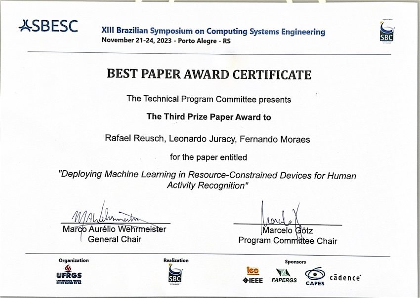
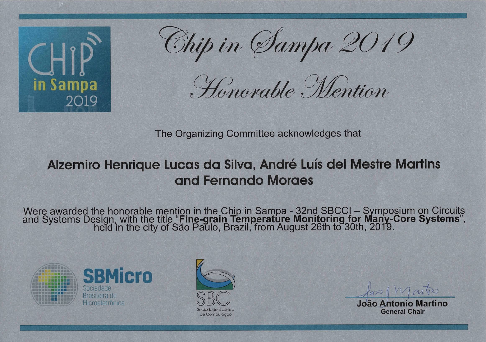
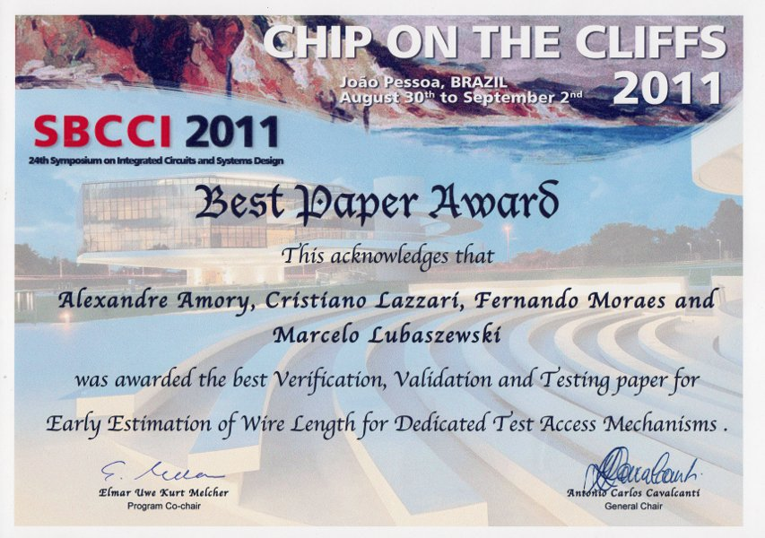
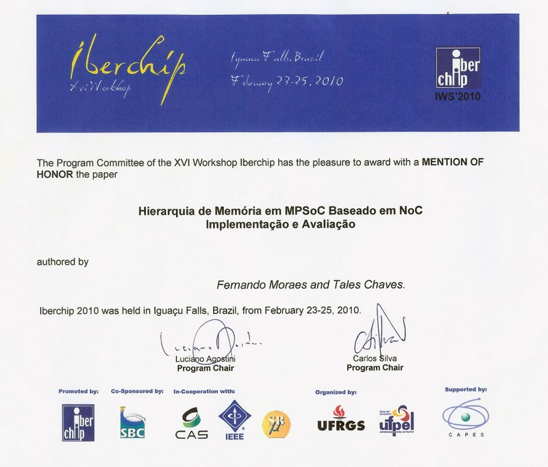
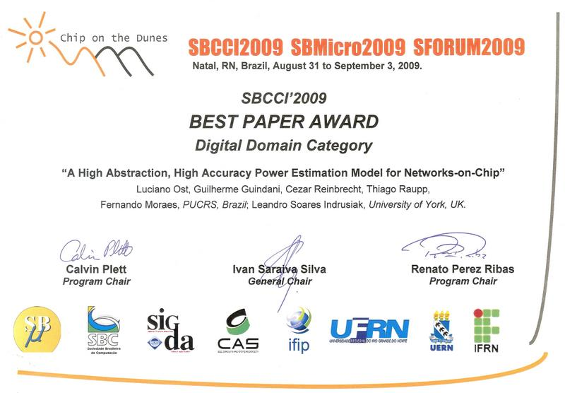
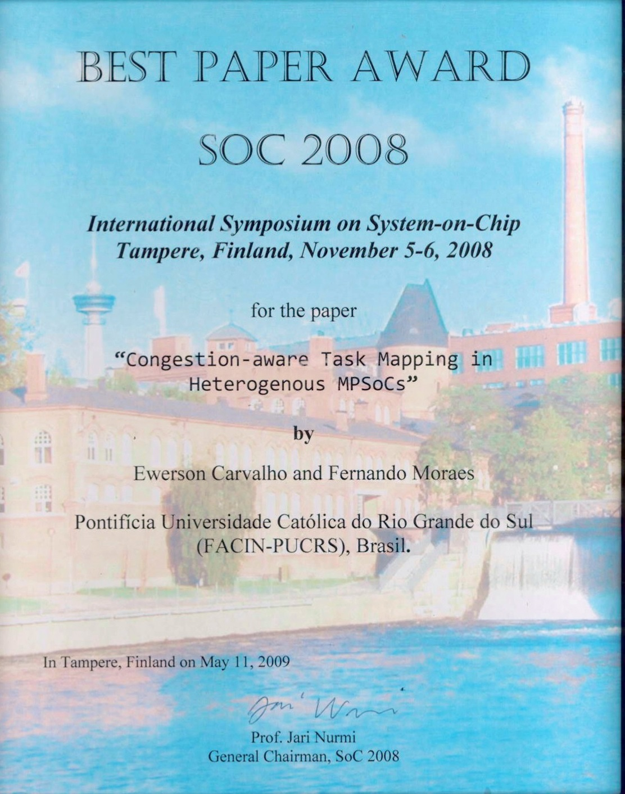
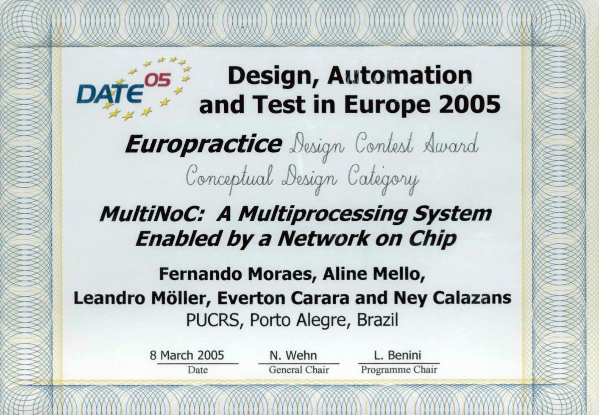

2024
-
Hardware Acceleration of Authenticated Encryption with Associated Data via RISC-V Instruction Set Extensions in Low Power Embedded Systems
GEWEHR, Carlos; MOURA, Nicolas; LUZA, Lucas; BERNARDON, Eduardo; CALAZANS, Ney; , GARIBOTTI, Rafael; MORAES, Fernando Gehm
In: LASCAS, 2024
-
RS5: An Integrated Hardware and Software Ecosystem for RISC-V Embedded Systems
NUNES, Willian Analdo; ZOTTO, Angelo Elias Dal; BORGES, Caroline da Silva; MORAES, Fernando Gehm
In: LASCAS, 2024
-
A Machine Learning Approach for Traffic Anomaly Detection in NoC-based Manycores
DAL ZOTTO, Angelo Elias; MORAES, Fernando Gehm.
In: SBCCI, 2024
-
Enhancing Manycore Lifetime Through Reinforcement Learning Task Mapping and Migration
WEBER, Iaçanã; ZANINI, Vitor Balbinot; MORAES, Fernando Gehm.
In: SBCCI, 2024
-
Joint Computation and Communication Analysis of Hard Real-Time Applications in Manycores
DOMINGUES, Anderson R. P.; DAMO, Lucas; JOHANN Fo., Sérgio; MORAES, Fernando Gehm
In: SBCCI, 2024
-
Soft Error Assessment of UAV Control Algorithms Running in Resource-constrained Microprocessors
HANNEMAN, Alex; GAVA, Jonas; VANCIN, Paulo; KAIM-KHANI, Aqsa; AMIRI, Sam; GARIBOTTI, Rafael; MORAES, Fernando Gehm; CALAZANS, Ney; REIS, Ricardo Augusto da Luz; OST, Luciano.
In: ISVLSI, 2024
2023
-
Lightweight Authentication for Secure IO Communication in NoC-based Many-cores
FACCENDA, Rafael Follmann; COMARU, Gustavo; CAIMI, Luciano Lores; MORAES, Fernando Gehm
 In: ISCAS, 2023
In: ISCAS, 2023
-
Improving the Efficiency of Cryptography Algorithms on Resource-Constrained Embedded Systems via RISC-V Instruction Set Extensions
GEWEHR, Carlos; MORAES, Fernando Gehm
In: SBCCI, 2023
-
Secure Network Interface for Protecting IO Communication in Many-cores
COMARU, Gustavo; FACCENDA, Rafael Follmann; CAIMI, Luciano L.; MORAES, Fernando Gehm
In: SBCCI, 2023
-
Assessment of Lightweight Cryptography Algorithms on ARM Cortex-M Processors
MOURA, Nicolas; LUCENA, Joaquim; CALAZANS, Ney Laert Vilar; OST, Luciano; MORAES, Fernando Gehm; GARIBOTTI, Rafael
In: SBCCI, 2023
-
Validating an Automated Asynchronous Synthesis Environment with a Challenging Design: RISC-V
NUNES, Willian; SARTORI, Marcos; MOREIRA, Matheus; MORAES, Fernando Gehm; CALAZANS, Ney
In: SBCCI, 2023
-
FLEA - FIT-Aware Heuristic for Application Allocation in Many-Cores based on Q-Learning
WEBER, Iacana Ianiski; ZANINI, Vitor; MORAES, Fernando Gehm
In: SBESC, 2023
-
Deploying Machine Learning in Resource-Constrained Devices for Human Activity Recognition
 REUSCH, Rafael Schild; JURACY, Leonardo R.; MORAES, Fernando Gehm
In: SBESC, 2023
-
Assessment of Communication Protocols’ Latency in Co-processing Robotic Systems
PEREIRA, Eduardo LUZA, Lucas MOURA, Nicolas OST, Luciano CALAZANS, Ney MORAES, Fernando Gehm GARIBOTTI, Rafael
In: NEWCAS, 2023
2022
-
Leveraging NoC-based Many-core Performance Through Runtime Mapping Defragmentation
DALZOTTO, Angelo; BORGES, Caroline; RUARO, Marcelo; MORAES, Fernando Gehm
In: ICECS, 2022
-
Design-Time Scheduling of Periodic, Hard Real-Time Flows for NoC-based Systems
DOMINGUES, Anderson; JOHANN Fo., Sérgio; AMORY, Alexandre de Morais; MORAES, Fernando Gehm
In: ICECS, 2022
-
Assessment and Optimization of 1D CNN Model for Human Activity Recognition
REUSCH, Rafael; JURACY, LEONARDO R.; MORAES, Fernando Gehm
In: SBESC, 2022
-
Non-intrusive Monitoring Framework for NoC-based Many-Cores
DALZOTTO, Angelo; BORGES, Caroline; RUARO, Marcelo; MORAES, Fernando Gehm
In: SBESC, 2022
-
Reliability Assessment of Many-Core Dynamic Thermal Management
LUCAS, Alzemiro Henrique; WEBER, Iaçanã; DEL MESTRE MARTINS, André Luis; MORAES, Fernando Gehm
In: ISCAS, 2022
-
Secure Communication with Peripherals in NoC-based Many-cores
FACCENDA, Rafael Follmann; COMARU, Gustavo; CAIMI, Luciano L.; MORAES, Fernando Gehm
In: SBCCI, 2022
-
A High-level Model to Leverage NoC-based Many-core Research
WEBER, Iaçanã DALZOTTO, Angelo Elias MORAES, Fernando Gehm
In: SBCCI, 2022
-
Design-Time Analysis of Real-Time Traffic for Networks-on-Chip using Constraint Models
DOMINGUES, ANDERSON R. P. JOHANN Fo., Sérgio AMORY, ALEXANDRE MORAES, Fernando Gehm
In: SBCCI, 2022
2021
-
Dynamic Mapping for Many-cores using Management Application Organization
DALZOTTO, Ângelo; RUARO, Marcelo; ERTHAL, Leonardo; MORAES, Fernando Gehm
In: ICECS, 2021
-
Management Application - a New Approach to Control Many-Core Systems
DALZOTTO, Ângelo; RUARO, Marcelo; ERTHAL, Leonardo; MORAES, Fernando Gehm
In: SBCCI, 2021
-
Dynamic Thermal Management in Many-Core Systems Leveraged by Abstract Modeling
LUCAS, Alzemiro Henrique; WEBER, Iaçanã; DEL MESTRE MARTINS, André Luis; MORAES, Fernando Gehm
In: ISCAS, 2021
-
Chronos: an Abstract NoC-based Manycore with Preserved Temporal and Spatial Traffic Distribution
LOPES, Geaninne; WEBER, Iaçanã; MARCON, César A.; MORAES, Fernando Gehm
In: LASCAS, 2021
-
A TensorFlow and System Simulator Integration Approach to Estimate Hardware Metrics of Convolution Accelerators
JURACY, Leonardo; MOREIRA, Matheus; AMORY, Alexandre; MORAES, Fernando Gehm
In: LASCAS, 2021
-
ORCA RT-Bench: A Reference Architecture for Real-Time Simulator
JDOMINGUES, Anderson BENO, João AMORY, ALEXANDRE Gehm MORAES, Fernando
In: SBESC, 2021
-
Interfaces de Rede para Comunicação com Periféricos em MPSoCs
MARCHESE, Tadeu; MORAES, Fernando Gehm
In: IBERCHIP, 2021
2020
-
Open-source NoC-based Many-Core for Evaluating Hardware Trojan Detection Methods
WEBER, Iaçanã; MARCHEZAN, Geaninne; CAIMI, Luciano L.; MARCON, CESAR A.; MORAES, Fernando Gehm
In: ISCAS, 2020
-
Lightweight Cryptographic Instruction Set Extension on Xtensa Processor
EISENKRAEMER, Gabriel; MORAES, Fernando Gehm; DE OLIVEIRA, LEONARDO LONDERO; CARARA, EVERTON
In: ISCAS, 2020
-
Multiple-objective Management based on a Distributed SDN Architecture for Many-cores
RUARO, Marcelo; MORAES, Fernando Gehm
In: SBCCI, 2020
-
Mapping and Migration Strategies for Thermal Management in Many-Core Systems
Da Silva, Alzemiro Henrique Lucas; Martins, André Luís Del Mestre; Moraes, Fernando Gehm
In: SBCCI, 2020
-
Reducing NoC Energy Consumption Exploring Asynchronous end-to-end GALS Communication
WEBER, Iaçanã; OLIVEIRA, Leonardo; CARARA, Everton Alceu; MORAES, Fernando Gehm
In: SBCCI, 2020
2019
-
Distributed SDN Architecture for NoC-based Many-core SoCs
RUARO, Marcelo; VELLOSO, Nedison; JANTSCH, Axel; MORAES, Fernando Gehm
In: NOCS, 2019
-
Security in Many-Core SoCs Leveraged by Opaque Secure Zones
CAIMI, Luciano; MORAES, Fernando Gehm
In: ISVLSI, 2019, pp. 471-476.
-
Fine-grain Temperature Monitoring for Many-Core Systems
 LUCAS, Alzemiro Henrique; MARTINS, André; MORAES, Fernando Gehm
In: SBCCI, 2019.
-
Lightweight Security Mechanisms for MPSoCs
SANTANA, Anderson; MEDINA, Henrique; FIORENTIN, Kevin; MORAES, Fernando Gehm
In: SBCCI, 2019
-
A FPGA Parameterizable Multi-Layer Architecture for CNNs
KOROL, Guilherme; MORAES, Fernando Gehm
In: SBCCI, 2019
-
An IR-UWB Pulse Generator using PAM Modulation with Adaptive PSD in 130nm CMOS Process
MOREIRA, Luiz Carlos; FONTEBASSO NETO, José; OLIVEIRA, Walter Silva; FERAUCHE, Thiago; HECK,Guilherme; CALAZANS, Ney; MORAES, Fernando Gehm
In: SBCCI, 2019
-
A Framework for Heterogeneous Many-core SoCs Generation
RUARO, Marcelo; CAIMI, Luciano; FOCHI, Vinicius; MORAES, Fernando Gehm
In: LASCAS, 2019, pp. 89-92.
{kind=link}
2018
-
Exploring the Impact of Soft Errors on NoC-Based Multiprocessor Systems
BORTOLON, Felipe T.; ABICH, Geancarlo; BAMPI, Sérgio; REIS, Ricardo Augusto da Luz; MORAES, Fernando Gehm; OST, Luciano
In: ISCAS, 2018
-
An LSSD Compliant Scan Cell for Flip-Flops
JURACY, Leonardo; MOREIRA, Matheus; KUENTZER, Felipe; MORAES, Fernando Gehm; AMORY, Alexandre de Morais
In: ISCAS, 2018
-
Software-Defined Networking Architecture for NoC-based Many-Cores
RUARO, Marcelo; MEDINA, Henrique Martins; AMORY, Alexandre de Morais; MORAES, Fernando Gehm Moraes
In: ISCAS, 2018
-
Secure Environment Architecture for MPSoCs
OLIVEIRA, Bruno; MEDINA, Henrique; SANTANA, Anderson; MORAES, Fernando Gehm
In: SBCCI, 2018
-
Fault-tolerance at the Management Level in Many-core Systems
FOCHI, Vinicius; CAIMI, Luciano; Silva, Marcelo H.; WACHTER, Eduardo; MORAES, Fernando Gehm
In: SBCCI, 2018
-
Exploring Asynchronous End-to-End Communication Through a Synchronous NoC
WEBER, Iaçanã; OLIVEIRA, Leonardo; Silva, MORAES, Fernando Gehm; CARARA, Everton A.
In: SBCCI, 2018
-
Runtime Creation of Continuous Secure Zones in Many-Core Systems for Secure Applications
CAIMI, Luciano; FOCHI, Vinicius; WACHTER, Eduardo; MORAES, Fernando Gehm
In: LASCAS, 2018
-
Evaluating the Cost to Cipher the NoC Communication
OLIVEIRA, Bruno; REUSCH, Rafael; MEDINA, Henrique; MORAES, Fernando Gehm
In: LASCAS, 2018
-
Secure Admission of Applications in Many-Cores
CAIMI, Luciano; FOCHI, Vinicius; MORAES, Fernando Gehm
In: ICECS, 2018
-
Evaluating Serialization for a Publish-Subscribe Based Middleware for MPSoCs
HAMERSKI, Jean; DOMINGUES, Anderson; MORAES, Fernando Gehm; AMORY, Alexandre de Morais
In: ICECS, 2018
-
Exploring RSA Performance Up to 4096-Bit for Fast Security Processing on a Flexible Instruction Set Architecture Processor
MARCHESAN, Grégory; WEIRICH JUNIOR, Nelson; CULAU, Eduardo; WEBER, Iaçanã; MORAES, Fernando Gehm; CARARA, Everton Alceu
In: ICECS, 2018
2017
-
Activation of Secure Zones in Many-Core Systems with Dynamic Rerouting
CAIMI, Luciano; FOCHI, Vinicius; WACHTER, Eduardo; MUNHOZ, Daniel; MORAES, Fernando Gehm
In: ISCAS, 2017, pp. 144-147
-
Demystifying the Cost of Task Migration in Distributed Memory Many-Core Systems
RUARO, Marcelo; MORAES, Fernando Gehm
In: ISCAS, 2017, pp. 148-151
-
Runtime Energy Management Under Real-Time Constraints in MPSoCs
MARTINS, André; RUARO, Marcelo; SANTANA, Anderson; MORAES, Fernando Gehm
In: ISCAS, 2017, pp. 2589-2592.
-
SDN-Based Circuit-Switching for Many-Cores
RUARO, Marcelo; MEDINA, Henrique; MORAES, Fernando Gehm
In: ISVLSI, 2017, pp. 385-390.
-
System Management Recovery Protocol for MPSoCs
FOCHI, Vinicius; CAIMI, Luciano; RUARO, Marcelo; WACHTER, Eduardo; MORAES, Fernando Gehm
In: SOCC, 2017, pp. 367-374.
-
XGT4: an Industrial Grade, Open Source Tester for Multi-Gigabit Networks
JURACY, Leonardo R.; LAZZAROTTO, Felipe B.; PIGATTO, Daniel; CALAZANS, Ney; MORAES, Fernando Gehm
In: ICECS, 2017.
-
Secure Admission and Execution of Applications in Many-core Systems
CAIMI, Luciano; FOCHI, Vinicius; WACHTER, Eduardo; MORAES, Fernando Gehm
In: SBCCI, 2017.
-
Estimation Methods for Static Noise Margins in CMOS Subthreshold Logic Circuits
BORTOLON, Felipe; MOREIRA, MATHEUS TREVISAN; MORAES, Fernando Gehm; BAMPI, Sérgio
In: SBCCI, 2017.
-
Hardware and Software Infrastructure to Implement Many-core Systems in Modern FPGAs
BORTOLON, Felipe; MORAES, Fernando Gehm
In: SBCCI, 2017.
2016
-
DMNI: A Specialized Network Interface for NoC-based MPSoCs
RUARO, Marcelo; LAZZAROTTO, Felipe; MARCON, César; MORAES, Fernando Gehm
In: ISCAS, 2016.
-
Efficient Traffic Balancing for NoC Routing Latency Minimization
FERREIRA, João; SILVEIRA, Jarbas; SILVEIRA, Jardel; CATALDO, Rodrigo; WEBBER, THAIS; MORAES, Fernando Gehm; MARCON, César
In: ISCAS, 2016.
-
Dynamic Real-Time Scheduler for Large-Scale MPSoCs
RUARO, Marcelo; MORAES, Fernando Gehm
In: GLSVLSI, 2016, pp. 341-346.
-
A Lightweight Software-based Runtime Temperature Monitoring Model for Multiprocessor Embedded Systems
CASTILHOS, Guilherme; OST, Luciano; MORAES, Fernando Gehm
In: SBCCI, 2016.
-
Runtime Energy Management for Many-Core Systems
MARTINS, André; SANTANA, Anderson; MORAES, Fernando Gehm
In: ICECS, 2016, pp. 380-383.
-
Scalability Evaluation in Many-Core Systems Due to the Memory Organization
MADALOZZO, Guilherme; DUENHA, Liana; AZEVEDO, Rodolfo; MORAES, Fernando Gehm
In: ICECS, 2016, pp. 396-399.
-
A Data Extraction and Debugging Framework for Large-Scale MPSoCs
RUARO, Marcelo; RUBIN, Felipe; CHAMORRA, Henrique; AMORY, Alexandre de Morais; MORAES, Fernando Gehm
In: ICECS, 2016, pp. 616-619.
-
Mapping of Real-Time Applications in a Packet Switching NoC-Based MPSoC
MADALOZZO, Guilherme; INDRUSIAK, Leandro Soares; MORAES, Fernando Gehm
In: ICECS, 2016, pp. 640-643.
-
Extending FreeRTOS to Support Dynamic and Distributed Mapping in Multiprocessor Systems
ABICH, Geancarlo; MANDELLI, Marcelo; ROSA, Felipe; OST, Luciano; MORAES, Fernando Gehm; REIS, Ricardo Augusto da Luz
In: ICECS, 2016, pp. 712-715.
-
A layered approach for fault tolerant NoC-based MPSoCs - Special session: Dependable MPSoCs
WACHTER, Eduardo; BARRETO, Francisco; FOCHI, Vinicius; AMORY, Alexandre de Morais; MORAES, Fernando Gehm
In: LATS, 2016, pp. 189-194.
2015
-
Fault Recovery Protocol for Distributed Memory MPSoCs
BARRETO, Francisco; AMORY, ALEXANDRE; MORAES, Fernando Gehm
In: ISCAS, 2015, pp. 421-424.
-
A Context Saving Fault Tolerant Approach for a Shared Memory Many-Core Architecture
WACHTER, Eduardo; VENTROUX, Nicolas; MORAES, Fernando Gehm
In: ISCAS, 2015, pp. 1570-1573.
-
An Integrated Method for Implementing Online Fault Detection in NoC-based MPSoCs
FOCHI, Vinicius; WACHTER, Eduardo; ERICHSEN, Augusto; AMORY, Alexandre de Morais; MORAES, Fernando Gehm
In: ISCAS, 2015, pp. 1562-1565.
-
Trading-off System Load and Communication in Mapping Heuristics for Improving NoC-Based MPSoCs Reliability
MANDELLI, Marcelo; OST, Luciano; SASSATELLI, Gilles; MORAES, Fernando Gehm
In: ISQED, 2015, pp. 392-396.
-
A Distributed Energy-aware Task Mapping to Achieve Thermal Balancing and Improve Reliability of Many-core Systems
MANDELLI, Marcelo; CASTILHOS, Guilherme, SASSATELLI, Gilles; OST, Luciano; MORAES, Fernando Gehm
In: SBCCI, 2015.
-
SDDS-NCL Design: Analysis of Supply Voltage Scaling
GUAZZELLI, Ricardo; MORAES, Fernando Gehm, CALAZANS, Ney; MOREIRA, Matheus
In: SBCCI, 2015.
-
A Hierarchical LST-Based Task Scheduler for NoC-Based MPSoCs with Slack-Time Monitoring Support
RUARO, Marcelo, MADALOZZO, Guilherme, MORAES, Fernando Gehm
In: ICECS, 2015, pp 308-311.
-
Differentiation of MPSoCs Message Classes Using Multiple NoCs
SILVA, Douglas, MORAES, Fernando Gehm
In: ICECS, 2015, pp. 312-315.
-
A Non-Intrusive and Reconfigurable Access Control to Secure NoCs
FERNANDES, Ramon, OLIVEIRA, Bruno, SEPULVEDA, Johanna, MARCON, César, MORAES, Fernando Gehm
In: ICECS, 2015, pp. 316-319.
-
A Platform-Based Design Framework to Boost Many-Core Software Development
MADALOZZO, Guilherme, MANDELLI, Marcelo, OST, Luciano, MORAES, Fernando Gehm
In: ICECS, 2015, pp. 320-323.
-
Hierarchical Energy Monitoring for Many-Core Systems
MARTINS, André, RUARO, Marcelo, MORAES, Fernando Gehm
In: ICECS, 2015, pp. 657-660
-
A Digitally Controlled Oscillator for Fine-Grained Local Clock Generators in MPSoCs
HECK,Guilherme; HECK, Leandro; MOREIRA, Matheus; MORAES, Fernando Gehm; CALAZANS, Ney
In: LASCAS, 2015
-
BAT-Hermes: A Transition-Signaling Bundled-Data NoC Router
GIBILUKA, Matheus; MOREIRA, Matheus; MORAES, Fernando Gehm CALAZANS, Ney
In: LASCAS, 2015
-
Exploração de Desempenho, Consumo Dinâmico e Eficiência Energética em MPSoC
DUENHA, Liana, MADALOZZO, Guilherme, SANTIAGO, Thiago, MORAES, Fernando Gehm, AZEVEDO, Rodolfo
In: WSCAD, 2015 - Simpósio em Sistemas Computacionais de Alto Desempenho
2014
-
Tool-Set for NoC-Based MPSoC Debugging - a Protocol View Perspective
RUARO, Marcelo; CARARA, Everton Alceu; MORAES, Fernando Gehm
In: ISCAS, 2014, pp. 2531-2534
-
A Monitored NoC with Runtime Path Adaptation
MORENO, Edson; SANTOS, Thais; MARCON, César; MORAES, Fernando Gehm; CALAZANS, Ney Laert Vilar
In: ISCAS, 2014, pp. 1965-1968
-
Runtime Fault Recovery Protocol for NoC-based MPSoCs
WACHTER, Eduardo; JURACY, Leonardo; ERICHSEN, Augusto; AMORY, Alexandre de Morais; MORAES, Fernando Gehm
In: ISQED, 2014, pp. 132-139.
-
A Framework for MPSoC Generation and Distributed Applications Evaluation
CASTILHOS, Guilherme; WACHTER, Eduardo; MADALOZZO, Guilherme; ERICHSEN, Augusto; MONTEIRO, Thiago; MORAES, Fernando Gehm
In: ISQED, 2014, pp. 408-411.
-
A Fast Runtime Fault Recovery Approach for NOC-Based MPSOCS for Performance Constrained Applications
WACHTER, Eduardo; ERICHSEN, Augusto; JURACY, Leonardo; AMORY, Alexandre de Morais; MORAES, Fernando Gehm
In: SBCCI, 2014.
-
Runtime QoS Support for MPSOC: A Processor Centric Approach
RUARO, Marcelo; CARARA, Everton Alceu; MORAES, Fernando Gehm
In: SBCCI, 2014.
-
Effects of the NoC Architecture in the Performance of NoC-Based MPSoCs
SILVA, Douglas; OLIVEIRA, Bruno; MORAES, Fernando Gehm
In: ICECS, 2014, p p. 431-434.
-
A Method for NoC-based MPSoC Energy Consumption Estimation
MARTINS, André; SILVA, Douglas; CASTILHOS, Guilherme; MONTEIRO, Thiago; MORAES, Fernando Gehm
In: ICECS, 2014, pp. 427-430.
-
Fast Energy Evaluation of Embedded Applications for Many-core Systems
ROSA, Felipe; OST, Luciano; ROSA, Thiago Raupp da; MORAES, Fernando Gehm; REIS, Ricardo Augusto da Luz
In: PATMOS, 2014.
-
Rede Paralela Dedicada a Serviços para Tolerância a Falhas em MPSoCs baseados em NoC
ERICHSEN, Augusto; WACHTER, Eduardo; MORAES, Fernando Gehm
In: IBERCHIP, 2014.
2013
-
Multi-level MPSoC Modeling for Reducing Software Development Cycle
MANDELLI, Marcelo, ROSA, Felipe, OST, Luciano, SASSATELLI, Gilles, MORAES, Fernando Gehm
In: ICECS, 2013, pp. 489-492.
-
Achieving QoS in NoC-based MPSoCs through Dynamic Frequency Scaling
GUINDANI, Guilherme Montez, MORAES, Fernando Gehm
In: SOC, 2013, 6p.
-
Adaptive QoS Techniques for NoC-Based MPSoCs
RUARO, Marcelo, CARARA, Everton Alceu, MORAES, Fernando Gehm
In: SOC, 2013, 6p.
-
Evaluating the Scalability of Test Buses
AMORY, Alexandre de Morais, MOREIRA, Matheus, LAZZARI, Cristiano, LUBASZEWSKI, Marcelo Soares, CALAZANS, Ney, MORAES, Fernando Gehm
In: SOC, 2013, 6p.
-
Charge Sharing Aware NCL Gates Design
MOREIRA, Matheus, OLIVEIRA, Bruno, MORAES, Fernando Gehm, CALAZANS, Ney
In: DFT, 2013, pp. 212-127.
-
Determining the Test Sources/Sinks for NoC TAMs
AMORY, Alexandre de Morais, MORENO, Edson, MORAES, Fernando Gehm, LUBASZEWSKI, Marcelo Soares
In: ISVLSI, 2013, pp. 8-13.
-
Distributed Resource Management in NoC-Based MPSoCs with Dynamic Cluster Sizes
CASTILHOS, Guilherme, MANDELLI, Marcelo, MADALOZZO, Guilherme, MORAES, Fernando Gehm
In: ISVLSI, 2013, pp. 153-158
-
Topology-Agnostic Fault-Tolerant NoC Routing Method
WACHTER, Eduardo; ERICHSEN, Augusto; AMORY, Alexandre de Morais; MORAES, Fernando Gehm
In: DATE, 2013, pp. 1595-1600.
2012
-
Evaluation of Adaptive Management Techniques in NoC-Based MPSoCs
MORAES, Fernando Gehm; CARARA, Everton Alceu; RUARO, Marcelo; MADALOZZO, Guilherme
In: ICECS, 2012, pp. 548-551.
-
Enhancing Performance of MPSoCs through Distributed Resource Management
MANDELLI, Marcelo; CASTILHOS, Guilherme; MORAES, Fernando Gehm
In: ICECS, 2012, pp. 544-547.
-
A Generic FPGA Emulation Framework
MORAES, Fernando Gehm; MOREIRA, Matheus; LUCAS, Carlo; CORREA, Dairan; CARDOSO, Douglas; MAGNAGUAGNO, Maurício; CASTILHOS, Guilherme; CALAZANS, Ney
In: ICECS, 2012, pp. 233-236.
-
Proposal and Evaluation of a Task Migration Protocol for NoC-based MPSoCs
MORAES, Fernando Gehm; MADALOZZO, Guilherme; CASTILHOS, Guilherme; CARARA, Everton Alceu
In: ISCAS, 2012, pp. 644-647.
-
MAZENOC: Novel Approach for Fault-Tolerant NoC Routing
WACHTER, Eduardo; MORAES, Fernando Gehm
In: SOCC, 2012, pp. 364-369.
-
Impact of C-Elements in Asynchronous Circuits
MOREIRA, Matheus; OLIVEIRA, Bruno; MORAES, Fernando Gehm; CALAZANS, Ney
In: ISQED, 2012, pp. 438-444.
-
A Spectrum of MPSoC Models for Design and Verification Spaces Exploration
PETRY, Carlos; WACHTER, Eduardo; MORAES, Fernando Gehm; CALAZANS, Ney; CASTILHOS, Guilherme
In: RSP, 2012, pp. 30-35.
-
Power Consumption Reduction in MPSoCs through DFS
ROSA, Thiago Raupp da; LARREA, Vivian; CALAZANS, Ney; MORAES, Fernando Gehm
In: SBCCI, 2012.
-
Comparative Analysis of Dynamic Task Mapping Heuristics in Heterogeneous NoC-based MPSoCs
MOLLER, Leandro Heleno; INDRUSIAK, Leandro Soares; OST, Luciano; MORAES, Fernando Gehm; GLESNER, Manfred
In: SOC, 2012.
-
An Open-source Framework for Heterogeneous MPSoC Generation
WACHTER, Eduardo; LUCAS, Carlo; CARARA, Everton Alceu; MORAES, Fernando Gehm
In: SPL, 2012, p. 1-6.
-
HardNoC: A Platform to Validate Networks on Chip through FPGA Prototyping
HECK,Guilherme; GUAZZELLI, Ricardo; MORAES, Fernando Gehm; CALAZANS, Ney; SOARES, Rafael
In: SPL, 2012, p. 15-20.
2011
-
Adapting a C-Element Design Flow for Low Power
MOREIRA, Matheus; OLIVEIRA, Bruno; PONTES, Julian; MORAES, Fernando Gehm; CALAZANS, Ney
In: ICECS, 2011, p. 45-48.
-
Task Mapping on NoC-Based MPSoCs with Faulty Tiles: Evaluating the Energy Consumption and the Application Execution Time
AMORY, Alexandre de Morais; MARCON, César; MORAES, Fernando Gehm; LUBASZEWSKI, Marcelo Soares
In: RSP, 2011, p. 164-170.
-
Arbitration and Routing Impact on NoC Design
MORENO, Edson; MARCON, César; CALAZANS, Ney; MORAES, Fernando Gehm
In: RSP, 2011, p. 193-198.
-
Dynamic Flow Reconfiguration Strategy to Avoid Communication Hot-Spots
PROLONGE, R.; CLERMIDY, Fabien; TEDESCO, Leonel Pablo; MORAES, Fernando Gehm
In: DSD, 2011, p. 519-524.
-
Energy-Aware Dynamic Task Mapping for NoC-based MPSoCs
MANDELLI, Marcelo; OST, Luciano; CARARA, Everton Alceu; GUINDANI, Guilherme Montez; ROSA, Thiago Gouvea da; MEDEIROS, Guilherme; MORAES, Fernando Gehm
In: ISCAS, 2011, p. 1676-1679.
-
Predictive Dynamic Frequency Scaling for Multi-Processor Systems-on-Chip
ALMEIDA, Gabriel Marchesan; BUSSEUIL, R.; CARARA, Everton Alceu; HERBERT, N.; VARYANI, S.; SASSATELLI, Gilles; BENOIT, Pascal; TORRES, Lionel; MORAES, Fernando Gehm
In: ISCAS, 2011, p. 1500-1503.
-
Achieving Composability in NoC-Based MPSoCs Through QoS Management at Software Level
CARARA, Everton Alceu; ALMEIDA, Gabriel Marchesan; SASSATELLI, Gilles; MORAES, Fernando Gehm
In: DATE, 2011, p. 417-422.
-
Evaluating Energy Consumption of Homogeneous MPSoCs using Spare Tiles
AMORY, Alexandre de Morais; OST, Luciano; MARCON, César; MORAES, Fernando Gehm
In: DATE, 2011, p. 1164-1167.
-
Early Estimation of Wire Length for Dedicated Test Access Mechanisms in Networks-on-Chip Based SoCs
(BEST PAPER)
 AMORY, Alexandre de Morais; LAZZARI, Cristiano; LUBASZEWSKI, Marcelo Soares; MORAES, Fernando Gehm
In: SBCCI, 2011, p. 73-78.
-
A Self-adaptable Distributed DFS Scheme for NoC-based MPSoCs
ROSA, Thiago Raupp da; GUINDANI, Guilherme Montez; CARDOSO, Douglas; CALAZANS, Ney; MORAES, Fernando Gehm
In: SBCCI, 2011, p. 203-208.
-
Energy-efficient Cache Coherence Protocol for NoC-based MPSoCs
CHAVES, Tales; CARARA, Everton Alceu; MORAES, Fernando Gehm
In: SBCCI, 2011, p. 215-220.
-
Multi-Task Dynamic Mapping onto NoC-based MPSoCs
MANDELLI, Marcelo; OST, Luciano; AMORY, Alexandre de Morais; MORAES, Fernando Gehm
In: SBCCI, 2011, p. 191-196.
-
Exploring Dynamic Mapping Impact on NoC-based MPSoCs Performance Using a Model- based Framework
OST, Luciano; MANDELLI, Marcelo; ALMEIDA, Gabriel Marchesan; INDRUSIAK, Leandro Soares; MOLLER, Leandro Heleno; GLESNER, Manfred; SASSATELLI, Gilles; ROBERT, Michel; MORAES, Fernando Gehm
In: SBCCI, 2011, p. 185-190.
-
Exploiting Multicast Messages in Cache-Coherence Protocols for NoC-based MPSoCs
CHAVES, Tales; CARARA, Everton Alceu; MORAES, Fernando Gehm
In: RECOSOC, 2011.
-
Exploring Heterogeneous NoC-based MPSoCs: from FPGA to High-Level Modeling
OST, Luciano; ALMEIDA, Gabriel Marchesan; MANDELLI, Marcelo; WACHTER, Eduardo; VARYANI, S.; INDRUSIAK, Leandro Soares; SASSATELLI, Gilles; ROBERT, Michel; MORAES, Fernando Gehm
In: RECOSOC, 2011.
-
HeMPS-S: A Homogeneous NoC-Based MPSoCs Framework Prototyped in FPGAs
WACHTER, Eduardo; BIAZI, Adelcio; MORAES, Fernando Gehm
In: RECOSOC, 2011.
{kind=link}
2010
-
Model-based Design Flow for NoC-based MPSoCs
OST, Luciano; INDRUSIAK, Leandro Soares; MAATTA, Sanna; MANDELLI, Marcelo; NURMI, Jari; MORAES, Fernando Gehm
In: ICECS, 2010.
-
Improving QoS of Multi-Layer Networks-On-Chip with Partial and Dynamic Reconfiguration of Routers
MOLLER, Leandro Heleno; FISCHER, Peter; MORAES, Fernando Gehm; INDRUSIAK, Leandro Soares; GLESNER, Manfred
In: FPL, 2010, p. 229-233.
-
Flow Oriented Routing for NoC
CARARA, Everton Alceu; MORAES, Fernando Gehm
In: SOCC, 2010, p. 367-370.
-
A message-level monitoring protocol for QoS flows in NoCs
TEDESCO, Leonel Pablo; ROSA, Thiago Gouvea da; MORAES, Fernando Gehm
In: SOC, 2010, p. 84-88,.
-
A Case Study of Hierarchically Heterogeneous Application Modelling Using UML and Ptolemy II
MAATTA, Sanna; INDRUSIAK, Leandro Soares; OST, Luciano; MOLLER, Leandro Heleno; GLESNER, Manfred; MORAES, Fernando Gehm; NURMI, Jari
In: SOC, 2010, p. 68-71.
-
Hermes-AA A 65nm Asynchronous NoC Router with Adaptive Routing
PONTES, Julian; MOREIRA, Matheus; MORAES, Fernando Gehm; CALAZANS, Ney
In: SOCC, 2010, p. 493-498.
-
Evaluating the impact of communication latency on applications running over on-chip multiprocessing platforms: a layered approach
INDRUSIAK, Leandro Soares; OST, Luciano; MORAES, Fernando Gehm; MAATTA, Sanna; NURMI, Jari; MOLLER, Leandro Heleno; GLESNER, Manfred
In: INDIN, 2010, p. 148-153.
-
Implementation and Evaluation of a Congestion Aware Routing Algorithm for Networks-on-Chip
TEDESCO, Leonel Pablo; ROSA, Thiago Gouvea da; CALAZANS, Ney; MORAES, Fernando Gehm
In: SBCCI, 2010, p. 91-96.
-
Evaluating the Impact of Task Migration in Multi-Processor Systems-on-Chip
ALMEIDA, Gabriel Marchesan; VARYANI, S.; BUSSEUIL, R.; SASSATELLI, Gilles; TORRES, Lionel; BENOIT, Pascal; CARARA, Everton Alceu; MORAES, Fernando Gehm
In: SBCCI, 2010, p. 73-78.
-
Hermes-A An Asynchronous NoC Router with Distributed Routing
PONTES, Julian; MOREIRA, Matheus; MORAES, Fernando Gehm; CALAZANS, Ney
In: PATMOS, 2010.
-
Graphical Interface for Debugging RTL Networks-on-Chip
L. Moller, H. Jesus, F. Moraes, L. S. Indrusiak, T. Hollstein, M. Glesner
In: BEC, 2010
-
Model Based Approach to Heterogeneous Application Modelling for on-Chip Multicore Platforms
MAATTA, Sanna; INDRUSIAK, Leandro Soares; OST, Luciano; MOLLER, Leandro Heleno; GLESNER, Manfred; MORAES, Fernando Gehm; NURMI, Jari
In: ACES-MB, 2010.
-
Instruction Set Simulator for MPSoCs based on NoCs and MIPS Processors
MOLLER, Leandro Heleno; RODRIGUES, A.; MORAES, Fernando Gehm; INDRUSIAK, Leandro Soares; GLESNER, Manfred
In: RECOSOC, 2010.
-
Hierarquia de Memória em MPSoC Baseado em NoC: Implementação e Avaliação
(BEST PAPER)
 CHAVES, Tales; PETRY, Carlos; MORAES, Fernando Gehm
In: IBERCHIP, 2010. -
Implementação e Avaliação de um MPSoC Homogêneo Interconectado por NoC
MOREIRA, Odair; MORAES, Fernando Gehm
In: IBERCHIP, 2010.
{kind=link}
2009
-
HeMPS - A Framework for NoC-Based MPSoC Generation
CARARA, Everton Alceu; OLIVEIRA, Roberto; CALAZANS, Ney; MORAES, Fernando Gehm
In: ISCAS, 2009, p. 1345-1348.
-
A High Abstraction, High Accuracy Power Estimation Model for Networks-on-Chip
(BEST PAPER)
 OST, Luciano; GUINDANI, Guilherme Montez; INDRUSIAK, Leandro Soares; REINBRECHT, Cezar; ROSA, Thiago Raupp da; MORAES, Fernando Gehm
In: SBCCI, 2009, p. 193-198.
-
A Path-Load Based Adaptive Routing Algorithm for Networks-on-Chip
TEDESCO, Leonel Pablo; CLERMIDY, Fabien; MORAES, Fernando Gehm
In: SBCCI, 2009, p. 141-146.
-
Managing QoS Flows at Task Level in NoC-Based MPSoCs
CARARA, Everton Alceu; CALAZANS, Ney; MORAES, Fernando Gehm
In: IFIP-VLSI-SOC, 2009, p. 133-138.
-
Investigating Runtime Task Mapping for NoC-based Multiprocessor SoCs
CARVALHO, Ewerson; CALAZANS, Ney; MORAES, Fernando Gehm
In: IFIP-VLSI-SOC, 2009, p. 71-76.
-
Crosstalk fault tolerant NoC - design and evaluation
LUCAS, Alzemiro Henrique; MORAES, Fernando Gehm
In: IFIP-VLSI-SOC, 2009, p. 115-120.
-
Evaluation of Static and Dynamic Task Mapping Algorithms in NoC-Based MPSoCs
CARVALHO, Ewerson; MARCON, César; CALAZANS, Ney; MORAES, Fernando Gehm
In: SOC, 2009, p. 87-90.
-
Characterizing Embedded Applications using a UML Profile
MAATTA, Sanna; INDRUSIAK, Leandro Soares; OST, Luciano; MOLLER, Leandro Heleno; GLESNER, Manfred; NURMI, Jari; MORAES, Fernando Gehm
In: SOC, 2009, p. 172-175.
-
A monitoring and adaptive routing mechanism for QoS traffic on mesh NoC architectures
TEDESCO, Leonel Pablo; CLERMIDY, Fabien; MORAES, Fernando Gehm
In: CODES+ISSS, 2009, p. 109-117.
-
Increasing NoC Power Estimation Accuracy through a Rate-Based Model
GUINDANI, Guilherme Montez; REINBRECHT, Cezar; ROSA, Thiago Raupp da; MORAES, Fernando Gehm
In: NOCS, 2009. p. 89-89.
-
Floating Point Hardware for Embedded Processors in FPGAs: Design Space Exploration for Performance and Area
RODOLFO, Taciano Ares; CALAZANS, Ney; MORAES, Fernando Gehm
In: Reconfig, 2009, p. 24-29.
-
A 10 Gbps OTN Framer Implementation Targeting FPGA Devices
GUINDANI, Guilherme Montez; FERLINI, Frederico; Oliveira, J.; CALAZANS, Ney; MORAES, Fernando Gehm
In: Reconfig, 2009, p. 30-35.
-
HeMPS Station: an environment to evaluate distributed applications in NoC-based MPSoCs
In: SIM, 2009.
{kind=link}
2008
-
Deadlock-Free Multicast Routing Algorithm for Wormhole-Switched Mesh Networks-on-Chip
CARARA, Everton Alceu; MORAES, Fernando Gehm
In: ISVLSI, 2008, p. 341-346.
-
NoC Power Estimation at the RTL Abstraction Level
GUINDANI, Guilherme Montez; REINBRECHT, Cezar; ROSA, Thiago Raupp da; CALAZANS, Ney; MORAES, Fernando Gehm
In: ISVLSI, 2008, p. 475-478.
-
Applying UML Interactions and Actor-oriented Simulation to the Design Space Exploration of Network-on-Chip Interconnects
INDRUSIAK, Leandro Soares; OST, Luciano; MOLLER, Leandro Heleno; MORAES, Fernando Gehm; GLESNER, Manfred
In: ISVLSI, 2008, p. 491-494.
-
MOTIM an Industrial Application Using NOCs
MORAES, Fernando Gehm; CARARA, Everton Alceu; PIGATTO, Daniel; CALAZANS, Ney
In: SBCCI, 2008, p. 182-187.
-
A Simplified Executable Model to Evaluate Latency and Throughput of Networks-on-Chip
OST, Luciano; MORAES, Fernando Gehm; INDRUSIAK, Leandro Soares; GLESNER, Manfred; MOLLER, Leandro Heleno; MAATTA, Sanna; NURMI, Jari
In: SBCCI, 2008, p. 170-175.
-
Congestion-aware Task Mapping in Heterogeneous MPSoCs
(BEST PAPER)
 CARVALHO, Ewerson; MORAES, Fernando Gehm
In: SOC, 2008.
-
Validation of executable application models mapped onto network-on-chip platforms
MAATTA, Sanna; INDRUSIAK, Leandro Soares; OST, Luciano; MOLLER, Leandro Heleno; NURMI, Jari; GLESNER, Manfred; MORAES, Fernando Gehm
In: SIES, 2008, p. 118-125.
{kind=link}
2007
-
Congestion-Aware Task Mapping in NoC-based MPSoCs with Dynamic Workload
CARVALHO, Ewerson; CALAZANS, Ney; MORAES, Fernando Gehm
In: ISVLSI, 2007, p. 459-460.
-
MOTIM - A Scalable Architecture for Ethernet Switches
BASTOS, Erico; CARARA, Everton Alceu; PIGATTO, Daniel; CALAZANS, Ney; MORAES, Fernando Gehm
In: ISVLSI, 2007, p. 451-452
-
Inserting Data Encoding Techniques into NoC-Based Systems
PALMA, José Carlos Sant'anna; INDRUSIAK, Leandro Soares; MORAES, Fernando Gehm; ORTIZ, Alberto Garcia; GLESNER, Manfred; REIS, Ricardo Augusto da Luz
In: ISVLSI, 2007, p. 299-304.
-
Architectural Issues in Homogeneous NoC-Based MPSoC
SASSATELLI, Gilles; SAINT-JEAN , Nicolas; WOSZEZENKI, Cristiane; GREHS, Ismael Augusto; MORAES, Fernando Gehm
In: RSP, 2007, p. 139-142.
-
Communication Models in Networks-on-Chip
CARARA, Everton Alceu; MELLO, Aline Vieira de; MORAES, Fernando Gehm
In: RSP, 2007, p. 57-60.
-
Heuristics for Dynamic Task Mapping in NoC-based Heterogeneous MPSoCs
CARVALHO, Ewerson; CALAZANS, Ney; MORAES, Fernando Gehm
In: RSP, 2007, p. 34-40.
-
SPP-NIDS - A Sea of Processors Platform for Network Intrusion Detection Systems
CARUSO, Luiz Carlos Mieres; GUINDANI, Guilherme Montez; SCHIMITT, Hugo Webber; CALAZANS, Ney; MORAES, Fernando Gehm
In: RSP, 2007, p. 27-33.
-
Evaluation of Algorithms for Low Energy Mapping onto NoCs
MARCON, César; MORENO, Edson; CALAZANS, Ney; MORAES, Fernando Gehm
In: ISCAS, 2007, p. 389-392.
-
A Cryptographic Coarse Grain Reconfigurable Architecture Robust Against DPA
MESQUITA, Daniel; BADRIGNANS, Benoît; TORRES, Lionel; SASSATELLI, Gilles; ROBERT, Michel; MORAES, Fernando Gehm
In: RAW, 2007, p. 170-175.
-
DfT for the Reuse of Networks-on-Chip as Test Access Mechanism
AMORY, Alexandre de Morais; FERLINI, Frederico; LUBASZEWSKI, Marcelo Soares; MORAES, Fernando Gehm
In: VTS, 2007, p. 435-440.
-
Rate-based Scheduling Police for QoS Flows in Networks on Chip
MELLO, Aline Vieira de; CALAZANS, Ney; MORAES, Fernando Gehm
In: IFIP-VLSI-SOC, 2007.
-
SCAFFI: An intrachip FPGA asynchronous interface based on hard macros
PONTES, Julian; SOARES, Rafael; CARVALHO, Ewerson; MORAES, Fernando Gehm; CALAZANS, Ney
In: ICCD, 2007, p. 541-546.
-
Buffer Sizing for QoS Flows in Wormhole Packet Switching NoCs
TEDESCO, Leonel Pablo; CALAZANS, Ney; MORAES, Fernando Gehm
In: SBCCI, 2007, p. 99-104.
-
Router Architecture for High-Performance NoCs
CARARA, Everton Alceu; CALAZANS, Ney; MORAES, Fernando Gehm
In: SBCCI, 2007, p. 111-116.
-
A NoC-based Infrastructure to Enable Dynamic Self Reconfigurable System
MOLLER, Leandro Heleno; GREHS, Ismael Augusto; CARVALHO, Ewerson; SOARES, Rafael; CALAZANS, Ney; MORAES, Fernando Gehm
In: RECOSOC, 2007.
-
Reducing the Power Consumption in Networks-on-Chip Through Data Coding Schemes
PALMA, José Carlos Sant'anna; INDRUSIAK, Leandro Soares; MORAES, Fernando Gehm; REIS, Ricardo Augusto da Luz; GLESNER, Manfred
In: ICECS, 2007, p. 1007-1010.
-
Uma Arquitetura Dinamicamente Reconfigurável para Criptografia Robusta contra Ataques por Canais Colaterais
MESQUITA, Daniel; MORAES, Fernando Gehm; CALAZANS, Ney; TORRES, Lionel; ROBERT, Michel
In: REC, 2007, Lisboa. II Jornadas sobre Sistemas Reconfiguráveis. Lisboa: IST Press, p. 45-53, 2007.
2006
-
Evaluation of Current QoS Mechanisms in Networks on Chip
MELLO, Aline Vieira de; TEDESCO, Leonel Pablo; CALAZANS, Ney; MORAES, Fernando Gehm
In: SOC, 2006, p. 115-118.
-
A Leak Resistant SoC to Counteract Side Channel Attacks
MESQUITA, Daniel; BADRIGNANS, Benoît; TORRES, Lionel; SASSATELLI, Gilles; ROBERT, Michel; MORAES, Fernando Gehm
In: SOC, 2006, p. 24-27.
-
Evaluating the Impact of Data Encoding Techniques on the Power Consumption in Networks-on-Chip
PALMA, José Carlos Sant'anna; INDRUSIAK, Leandro Soares; MORAES, Fernando Gehm; ORTIZ, Alberto Garcia; GLESNER, Manfred; REIS, Ricardo Augusto da Luz
In: ISVLSI, 2006, p. 426-427.
-
Reconfigurable Systems Enabled by a Network-on-Chip
MOLLER, Leandro Heleno; GREHS, Ismael Augusto; CALAZANS, Ney; MORAES, Fernando Gehm
In: FPL, 2006, p. 857-860.
-
A Leak Resistant Architecture Against Side Channel Attacks
MESQUITA, Daniel; BADRIGNANS, Benoît; TORRES, Lionel; SASSATELLI, Gilles; ROBERT, Michel; MORAES, Fernando Gehm
In: FPL, 2006, p. 881-884.
-
Adaptive Coding in Networks-on-Chip: Transition Activity Reduction versus Power Overhead of the Codec Circuitry
PALMA, José Carlos Sant'anna; ORTIZ, Alberto Garcia; MORAES, Fernando Gehm; GLESNER, Manfred; REIS, Ricardo Augusto da Luz
In: PATMOS, 2006, p. 603-613.
-
Wrapper Design for the Reuse of Networks-on-Chip as Test Access Mechanism
AMORY, Alexandre de Morais; GOSSEN, Kess; MARINISSEN, Erik; LUBASZEWSKI, Marcelo Soares; MORAES, Fernando Gehm
In: ETS, 2006, p. 213-218.
-
Application Driven Traffic Modeling for NoCs
TEDESCO, Leonel Pablo; MELLO, Aline Vieira de; GIACOMET, Leonardo; CALAZANS, Ney; MORAES, Fernando Gehm
In: SBCCI, 2006, p. 62-67.
-
Infrastructure for Dynamic Reconfigurable Systems: Choices and Trade-offs
MOLLER, Leandro Heleno; SOARES, Rafael; CARVALHO, Ewerson; GREHS, Ismael Augusto; CALAZANS, Ney; MORAES, Fernando Gehm
In: SBCCI, 2006, p. 44-49.
2005
-
Virtual Channels in Networks on Chip: Implementation and Evaluation on Hermes NoC
MELLO, Aline Vieira de; TEDESCO, Leonel Pablo; CALAZANS, Ney; MORAES, Fernando Gehm
In: SBCCI, 2005, p. 178-183.
-
Mapping Embedded Systems onto NoCs - The Traffic Effect on Dynamic Energy Estimation
PALMA, José Carlos Sant'anna; MARCON, César; MORAES, Fernando Gehm; CALAZANS, Ney; REIS, Ricardo Augusto da Luz; SUSIN, Altamiro Amadeu
In: SBCCI, 2005, p. 196-201.
-
Traffic Generation and Performance Evaluation for Mesh-based NoCs
TEDESCO, Leonel Pablo; MELLO, Aline Vieira de; GARIBOTTI, Diego; CALAZANS, Ney; MORAES, Fernando Gehm
In: SBCCI, 2005, p. 184-189.
-
Current Mask Generation: A transistor level security against DPA attacks
MESQUITA, Daniel; TECHER, Jean-denis; TORRES, Lionel; SASSATELLI, Gilles; CAMBOM, Gaston; ROBERT, Michel; MORAES, Fernando Gehm
In: SBCCI, 2005, p. 115-120.
-
Modeling the Traffic Effect for the Application Cores Mapping Problem onto NoCs
MARCON, César; PALMA, José Carlos Sant'anna; SUSIN, Altamiro Amadeu; REIS, Ricardo Augusto da Luz; CALAZANS, Ney; MORAES, Fernando Gehm
In: IFIP-VLSI-SOC, 2005, p. 391-396.
-
Packet-switching Network-On-Chip features exploration and characterization
SASSATELLI, Gilles; RISO, Séverine; TORRES, Lionel; ROBERT, Michel; MORAES, Fernando Gehm
In: IFIP-VLSI-SOC, 2005, p. 403-408.
-
Current Mask Generation: an analogical circuit to thwart DPA attack
MESQUITA, Daniel; TECHER, Jean-denis; TORRES, Lionel; ROBERT, Michel; CAMBOM, Gaston; SASSATELLI, Gilles; MORAES, Fernando Gehm
In: IFIP-VLSI-SOC, 2005, p. 539-544.
-
A Scalable Test Strategy for Network-on-Chip Routers
AMORY, Alexandre de Morais; BRIÃO, Eduardo Wenzel; COTA, Érika Fernandes; LUBASZEWSKI, Marcelo Soares; MORAES, Fernando Gehm
In: ITC, 2005, p. 591-599.
-
Mesh-based Network On Chip characterization: A GALS approach
SASSATELLI, Gilles; RISO, Séverine; TORRES, Lionel; ROBERT, Michel; MORAES, Fernando Gehm
In: DCIS, 2005, p. 10-15.
-
MultiNoC: A Multiprocessing System Enabled by a Network on Chip (AWARD)
 MELLO, Aline Vieira de; MOLLER, Leandro Heleno; CALAZANS, Ney; MORAES, Fernando Gehm
In: DATE, 2005, p. 234-239.
-
Exploring NoC Mapping Strategies: An Energy and Timing Aware Technique
MARCON, César; CALAZANS, Ney; MORAES, Fernando Gehm; SUSIN, Altamiro Amadeu; REIS, Igor Maicá; HESSEL, Fabiano
In: DATE, 2005, p. 502-507.
-
Test Time Reduction Reusing Multiple Processors in a Network-on-Chip Based Architecture
MAMORY, Alexandre de Morais; LUBASZEWSKI, Marcelo Soares; MORAES, Fernando Gehm; MORENO, Edson
In: DATE, 2005, p. 62-63.
-
Design, Validation and Prototyping of the EMS SDH STM-1 Mapper Soft-core
CALAZANS, Ney; MORAES, Fernando Gehm; MARCON, César; PALMA, José Carlos Sant'anna
In: LATW, 2005, p. 313-318.
-
MAIA - A Framework for Networks on Chip Generation and Verification
OST, Luciano; MELLO, Aline Vieira de; PALMA, José Carlos Sant'anna; CALAZANS, Ney; MORAES, Fernando Gehm
In: ASP-DAC, 2005, p. 18-21.
-
Arquitetura Mar de Processadores para Detecção de Intrusão em Redes
CARUSO, Luiz Carlos Mieres; GUINDANI, Guilherme Montez; SCHIMITT, Hugo Webber; CALAZANS, Ney; MORAES, Fernando Gehm
In: IBERCHIP, 2005, p. 247-250.
-
Processadores Reconfiguraveis: Estado da Arte
MOLLER, Leandro Heleno; MORAES, Fernando Gehm; CALAZANS, Ney
In: IBERCHIP, 2005, p. 110-113.
-
Canais Virtuais em Redes Intra-Chip - Implementacao na rede HERMES
CARARA, Everton Alceu; MELLO, Aline Vieira de; CALAZANS, Ney; MORAES, Fernando Gehm
In: IBERCHIP, 2005, p. 320-321.
{kind=link}
2004
-
Reconfiguration Control for Dynamically Reconfigurable Systems
CARVALHO, Ewerson; CALAZANS, Ney; MORAES, Fernando Gehm; MESQUITA, Daniel
In: DCIS, 2004.
-
FiPRe: An Implementation Model to Enable Self-Reconfigurable Applications
MOLLER, Leandro Heleno; CALAZANS, Ney; BRIÃO, Eduardo Wenzel; MORAES, Fernando Gehm; CARVALHO, Ewerson; CAMOZZATO, Daniel
In: FPL, 2004, p. 1042-1046.
-
PADReH - A Framework for the Design and Implementation of Dynamically and Partially Reconfigurable Systems
CARVALHO, Ewerson; CALAZANS, Ney; BRIÃO, Eduardo Wenzel; MORAES, Fernando Gehm
In: SBCCI, 2004, p. 10-15.
-
Reducing test time with processor reuse in network-on-chip based systems
AMORY, Alexandre de Morais; COTA, Érika Fernandes; LUBASZEWSKI, Marcelo Soares; MORAES, Fernando Gehm
In: SBCCI, 2004, p. 111-116.
-
A Programmable Logic BIST Controller for IP Cores
AMORY, Alexandre de Morais; LUBASZEWSKI, Marcelo Soares; MORAES, Fernando Gehm
In: LATW, 2004, p. 104-111.
-
Applying Memory Test Algorithms to Embedded System
MARCON, César; AMORY, Alexandre de Morais; LUBASZEWSKI, Marcelo Soares; SUSIN, Altamiro Amadeu; MORAES, Fernando Gehm; CALAZANS, Ney; HESSEL, Fabiano
In: LATW, 2004, p. 43-49.
-
NOCGEN - Uma Ferramenta para Geração de Redes Intra-Chip Baseada na Infra-Estrutura HERMES
MORAES, Fernando Gehm; OST, Luciano; MELLO, Aline Vieira de; PALMA, José Carlos Sant'anna; CALAZANS, Ney
In: IBERCHIP, 2004, p. 210-216.
-
Reconfiguração Parcial e Dinâmica para Núcleos de Propriedade Intelectual com Interfaces de Comunicação Padronizadas
BRIÃO, Eduardo Wenzel; CAMOZZATO, Daniel; RIES, Luís Henrique; MORAES, Fernando Gehm; CALAZANS, Ney
In: IBERCHIP, 2004, p. 446-456.
-
Controle de Configurações em Sistemas Dinâmica e Parcialmente Reconfiguráveis
CARVALHO, Ewerson; MOLLER, Frederico Bartz; MORAES, Fernando Gehm; CALAZANS, Ney
In: IBERCHIP, 2004, p. 435-445.
-
Réseau d'Interconnexion pour les Systèmes sur Puce : le Réseau HERMES
RISO, Séverine; TORRES, Lionel; SASSATELLI, Gilles; ROBERT, Michel; MORAES, Fernando Gehm
In: SCS, 2004, Congres International de Signaux, Circuits et Systemes, 2004.
2003
-
A Low Area Overhead Packet-switched Network on Chip: Architecture and Prototyping
MORAES, Fernando Gehm; MELLO, Aline Vieira de; MOLLER, Leandro Heleno; OST, Luciano; CALAZANS, Ney
In: IFIP-VLSI-SOC, 2003, p. 318-323.
-
Software-Based Test for Non-Programmable Cores in Bus-Based System-on-Chip Architectures
AMORY, Alexandre de Morais; OLIVEIRA, Leandro Augusto de; MORAES, Fernando Gehm
In: IFIP-VLSI-SOC, 2003, p. 174-179.
-
Are coarse grain reconfigurable architectures suitable for cryptography?
MESQUITA, Daniel; TORRES, Lionel; ROBERT, Michel; SASSATELLI, Gilles; MORAES, Fernando Gehm
In: IFIP-VLSI-SOC, 2003, p. 276-281.
-
Design and Prototyping of Direct Torque Control of Induction Motors in FPGAs
FERREIRA, Sandro Binsfeld; HAFFNER, Felipe; PEREIRA, Luís Fernando Alves; MORAES, Fernando Gehm
In: SBCCI, 2003, p. 105-110.
-
From VHDL Register Transfer Level to SystemC Transaction Level Modeling: a Comparative Case Study
CALAZANS, Ney; MORENO, Edson; HESSEL, Fabiano; ROSA, Vitor; MORAES, Fernando Gehm; CARARA, Everton Alceu
In: SBCCI, 2003, p. 355-360.
-
Exploiting reconfigurability for low-power control of embedded processors
CARRO, Luigi; CÔRREA, E.; CARDOSO, R.; MORAES, Fernando Gehm; BAMPI, Sérgio
In: ISCAS, 2003, p. 421-424.
-
Remote and Partial Reconfiguration of FPGAs: Tools and Trends
MESQUITA, Daniel; MORAES, Fernando Gehm; PALMA, José Carlos Sant'anna; MOLLER, Leandro Heleno; CALAZANS, Ney
In: RAW, 2003.
-
Development of a Tool-Set for Remote and Partial Reconfiguration of FPGAs
MORAES, Fernando Gehm; MESQUITA, Daniel; PALMA, José Carlos Sant'anna; MOLLER, Leandro Heleno; CALAZANS, Ney
In: DATE, 2003, p. 1122-1123.
-
Software-Based Test Integration in a SoC Design Flow
AMORY, Alexandre de Morais; MORAES, Fernando Gehm; OLIVEIRA, Leandro Augusto de
In: LATW, 2003, p. 169-174.
-
Direct Torque Control with Stator Ripple Frequency Imposed by Dithering
FERREIRA, Sandro Binsfeld; MORAES, Fernando Gehm; HAFFNER, José Felipe; PEREIRA, Luís Fernando Alves
In: COBEP, 2003, p. 10-20.
-
Design of a fingerprint system using a hardware/software environment
BONATO, Lee Vanderlei; MOLZ, Rolf Fredi; FURTADO, João Carlos; FERRÃO, Marcos Flores; MORAES, Fernando Gehm
In: FPGA, 2003, p. 240-240.
-
Comparação de Posicionamento Simulated Annealing e Quadratura no Gerador Automático de Macro-Células TROPIC
HENTSCHKE, Renato; FIORENTIN, D.; MORAES, Fernando Gehm; REIS, Ricardo Augusto da Luz
In: IBERCHIP, 2003.
-
Desenvolvimento de um Sistema Multiprocessado para Dispositivos FPGAs
MELLO, Aline Vieira de; MOLLER, Leandro Heleno; MORAES, Fernando Gehm
In: IBERCHIP, 2003.
2002
-
A Heterogeneous and Distributed Co-Simulation Environment
AMORY, Alexandre de Morais; MORAES, Fernando Gehm; OLIVEIRA, Leandro Augusto de; CALAZANS, Ney; HESSEL, Fabiano
In: SBCCI, 2002, p. 115-120.
-
Core Communication Interface for FPGAs
PALMA, José Carlos Sant'anna; MELLO, Aline Vieira de; MOLLER, Leandro Heleno; MORAES, Fernando Gehm; CALAZANS, Ney
In: SBCCI, 2002, p. 183-188.
-
Requirements, Primitives and Models for Systems Specification
MARCON, César; CALAZANS, Ney; MORAES, Fernando Gehm
In: SBCCI, 2002, p. 323-328, 2002.
-
An Adaptable Educational Platform for Engineering and IT Laboratory Based Courses
BEZERRA, Eduardo; POUCHET, M.; CALAZANS, Ney; MORAES, Fernando Gehm; GOUGH, M.
In: FIE, 2002, p. T1D22-T1D27.
-
Teaching Computer Organization and Architecture with Hands-on Experience
CALAZANS, Ney; MORAES, Fernando Gehm; MARCON, César
In: FIE, 2002, p. T2F15-T2F20.
-
Deriving Different Computer Science Curricula from a Common Core of Disciplines
MORAES, Fernando Gehm; ZORZO, Avelino; CALAZANS, Ney
In: ICTEM, 2002, p. 43-49.
-
Desenvolvimento de um Ambiente de Co-Simulação Distribuído e Heterogêneo
AMORY, Alexandre de Morais; MORAES, Fernando Gehm; OLIVEIRA, Leandro Augusto de; HESSEL, Fabiano; CALAZANS, Ney
In: IBERCHIP, 2002.
-
Interface de Comunicação de Cores em FPGAs
PALMA, José Carlos Sant'anna; MELLO, Aline Vieira de; CALAZANS, Ney; MORAES, Fernando Gehm
In: IBERCHIP, 2002.
-
Modelagem e Descrição de Sistemas Computacionais - Um Estudo de Caso de Comparação das Linguagens VHDL e SDL
MARCON, César; CALAZANS, Ney; MORAES, Fernando Gehm; RIES, Luís Henrique; HESSEL, Fabiano
In: IBERCHIP, 2002.
-
Prototyping of Embedded Digital Systems from SDL Language: a Case Study
MARCON, César; HESSEL, Fabiano; AMORY, Alexandre de Morais; RIES, Luís Henrique; MORAES, Fernando Gehm; CALAZANS, Ney
In: HLDVT, 2002, p. 133-138.
- SIM - Seminário Sul de Microeletrônica
Tool-Set for Remote and Partial Reconfiguration
Modeling of Embedded Digital Systems from SDL Language: a Case Study
Core Communication Interface for FPGAs
A Heterogeneous and Distributed Co-Simulation Environment
2001
-
Using the CAN Protocol and Reconfigurable Computing Technology for Web-Based Smart House Automation
MORAES, Fernando Gehm; AMORY, Alexandre de Morais; CALAZANS, Ney; BEZERRA, Eduardo; PETRINI JÚNIOR, J.
In: SBCCI, 2001, p. 38-43.
-
Interconnection Length Estimation at Logic-Level
MARTINS, João Batista; MORAES, Fernando Gehm; REIS, Ricardo Augusto da Luz
In: SBCCI, 2001, p. 98-102.
-
Effective Industry-Academia Cooperation in Telecom: a Method, a Case Study and Some Initial Results
CALAZANS, Ney; MORAES, Fernando Gehm; MARCON, César; BLAUTH, Vitor Hugo; VALIATI, Ronaldo; MANFROI, Édson
In: SBrT, 2001.
-
Um Ambiente de Compilação e Simulação para Processadores Embarcados Parametrizáveis
MORAES, Fernando Gehm; CALAZANS, Ney; MARCON, César; MELLO, Aline Vieira de
In: IBERCHIP, 2001.
-
Reconfiguração Parcial e Remota de Cores FPGAs
MESQUITA, Daniel; MORAES, Fernando Gehm; PALMA, José Carlos Sant'anna; MOLLER, Leandro Heleno; CALAZANS, Ney
In: IBERCHIP, 2001.
-
Barramento de Alto Desempenho para Interação Software/Hardware
CAPPELATTI, Ewerton Artur; MORAES, Fernando Gehm; CALAZANS, Ney; OLIVEIRA, Leandro Augusto de
In: IBERCHIP, 2001.
-
Sistema Integrado e Multiplataforma para Controle Remoto de Residências
MORAES, Fernando Gehm; AMORY, Alexandre de Morais; PETRINI JÚNIOR, J.
In: IBERCHIP, 2001.
-
Projeto, Implementação e Validação de um IP Soft Core Ethernet sobre Dispositivos Reconfiguráveis
TOROK, Delfim; MORAES, Fernando Gehm; CALAZANS, Ney; ANDREOLI, Andrey
In: IBERCHIP, 2001.
-
System Prototyping dedicated to Neural Network Real-Time Image Processing
MOLZ, Rolf Fredi; ENGEL, Paulo; MORAES, Fernando Gehm; TORRES, Lionel; MICHEL, Robert
In: SCI, 2000, p. 128-133.
-
SCR - Seminário de Computaçãoo Reconfigurável
RECKON - A Reconfigurable Prototyping Kit forEngineering and IT Laboratory Based Courses
Ambiente de Desenvolvimento de Processador Embarcado para Aplicações de Codesign
Reconfiguração Parcial e Remota de Dispositivos FPGA da Família Virtex
Métodos para Desenvolvimento e Distribuição de IP Cores
Tendências em Reconfiguração dinâmica de FPGAs (palestra convidada)
2000
-
Codesign of Fully Parallel Neural Network for a Classification Problem
MOLZ, Rolf Fredi; ENGEL, Paulo; MORAES, Fernando Gehm; TORRES, Lionel; ROBERT, Michel
In: SCI, 2000, p. 128-133.
-
Fast Interconnect Parasitic Extraction in Deep Submicron Using Bin-Based Algorithm
FERREIRA, Fábio; MORAES, Fernando Gehm; REIS, Ricardo Augusto da Luz
In: MWSCAS, 2000.
-
Design of a Classification System for Rectangular Shapes Using a Co-Design Environment
MOLZ, Rolf Fredi; ENGEL, Paulo; MORAES, Fernando Gehm; TORRES, Lionel; ROBERT, Michel
In: SBCCI, 2000, p. 281-286.
-
LASCA - Interconnect Parasitic Extraction Tool for Deep-Submicron IC Design
FERREIRA, Fábio; MORAES, Fernando Gehm; REIS, Ricardo Augusto da Luz
In: SBCCI, 2000, p. 327-332.
-
WTROPIC: a WWW-based Macro-Cell Generator
FRAGOSO, João; MORAES, Fernando Gehm; REIS, Ricardo Augusto da Luz
In: SBCCI, 2000, p. 133-138.
-
Power Estimation at Logic-Level Considering Interconnection Capacitances
MARTINS, João Batista; FERREIRA, Fábio; REIS, Ricardo Augusto da Luz; MORAES, Fernando Gehm
In: SBMICRO, 2000.
-
A Fast Prototyping Neural Network Model for Image Classification
MOLZ, Rolf Fredi; ENGEL, Paulo; MORAES, Fernando Gehm; TORRES, Lionel; ROBERT, Michel
In: DCIS, 2000, p. 836-841.
-
A Physical Synthesis Design Flow Based on Virtual Components
MORAES, Fernando Gehm; ROBERT, Michel; AUVERGNE, Daniel; AZEMARD, Nadine
In: DCIS, 2000, p. 740-745.
-
Deterministic versus Non-Deterministic Placement Algorithms for Automatic Layout Synthesis Tools
MORAES, Fernando Gehm; VELASCO, Josep
In: DCIS, 2000, p. 752-756.
- CORE
Accelerating Sorting Through the Use of Reconfigurable Hardware
Implementação eficiente de uma arquitetura load/store em VHDL
Estudo da viabilidade de implementação de um sistema de localização e reconhecimento de objetos com uso de RNAs implementadas em FPGA
1999
-
A Virtual CMOS Library Approach for Fast Layout Synthesis
MORAES, Fernando Gehm; ROBERT, Michel; AUVERGNE, Daniel
In: IFIP-VLSI-SOC, 1999, p. 415-426.
-
VLSI Hardware Design by Computer Science Students: How early can they start? How far can they go?
CALAZANS, Ney; MORAES, Fernando Gehm
In: FIE, 1999, p. c6-12-c6-17.
-
PMAZE: Modelagem e roteamento para FPGAs
MARQUES, Paulo Cesar; MORAES, Fernando Gehm; CALAZANS, Ney
In: IBERCHIP, 1999, p. 70-80.
-
Cleo-LIRMM: um experimento de implementação de processadores dedicados em plataformas de prototipação de sistemas embarcado
MORAES, Fernando Gehm; CALAZANS, Ney; SILVA, Felipe Rocha; BARRIOS, Maurício
In: IBERCHIP, 1999, p. 81-90.
-
Uso de um Ambiente Codesign para a Implementação de Redes Neurais
MOLZ, Rolf Fredi; ENGEL, Paulo; MORAES, Fernando Gehm
In: CBRN, 1999, p. 13-18.
1998
-
Evaluation of Transistor Densities for Submicronic CMOS Technologies
MORAES, Fernando Gehm; TORRES, Lionel; ROBERT, Michel; AUVERGNE, Daniel
In: SBMICRO, 1998, p. 123-130.
-
An Improved Path Enumeration Method Which Considers Different Fall and Rise Gate Delays
GUNTZEL, José Luiz; PINTO, Ana; MORAES, Fernando Gehm; REIS, Ricardo Augusto da Luz
In: SBCCI, 1998, p. 208-211.
-
Estimation of Layout Densities for CMOS Digital Circuits
MORAES, Fernando Gehm; TORRES, Lionel; ROBERT, Michel; AUVERGNE, Daniel
In: PATMOS, 1998, p. 61-70.
1997
-
An Efficient Layout Style For Three-Metal CMOS Macro-Cells
MORAES, Fernando Gehm; REIS, Ricardo Augusto da Luz; KASTENSMIDT, Fernanda Lima
In: IFIP-VLSI-SOC, 1997, p. 415-426.
-
Ambiente Agata de Projeto Versao Beta 2.0
CARRO, Luigi; JOHANN, Marcelo; KINDEL, Marcus; GONCALVES, P.; LIMA, A.; MIGLIORIN, G.; NARDI, Giovani; MORAES, Fernando Gehm; REIS, Ricardo Augusto da Luz; JACOBI, Ricardo Pezzuol; SUSIN, Altamiro Amadeu
In: IBERCHIP, 1997, p. 459-503.
-
TENTOS for Windows
MAHLMANN, L. G.; MORAES, Fernando Gehm; GUNTZEL, José Luiz; REIS, Ricardo Augusto da Luz
In: IBERCHIP, 1997, p. 513-522.
-
Hardsoft: Plataforma Reconfigurável Para Caracterização Sob Radiação de Componentes Eletrônicos Empregados Em Satélite
VARGAS, Fabian; CALAZANS, Ney; MORAES, Fernando Gehm; BEZERRA, Eduardo
In: SCTF, 1997, p. 139-152.
1996
-
An Environment To Design Digital Circuits Based On The Brazilian Gate-Array
CARRO, Luigi; MORAES, Fernando Gehm; JOHANN, Marcelo; KINDEL, Marcus; BENONI, P.; MIGLIORIN, G.; REIS, Ricardo Augusto da Luz; SUSIN, Altamiro Amadeu
In: IBERCHIP, 1996, p. 198-205.
-
A New Layout Style For High-Performance Circuits
MORAES, Fernando Gehm
In: SBCCI, 1996, p. 153-163.
-
Pre-Layout Performance Prediction For Automatic Macro-Cell synthesis
MORAES, Fernando Gehm; REIS, Ricardo Augusto da Luz; TORRES, Lionel; ROBERT, Michel; AUVERGNE, Daniel
In: ISCAS, 1996, p. 814-817.